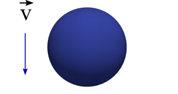
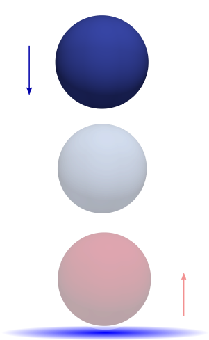
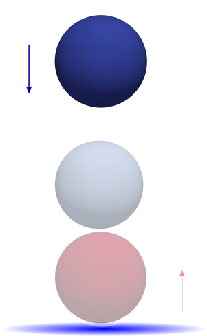
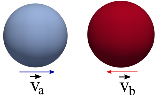
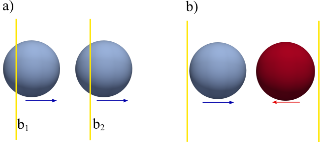
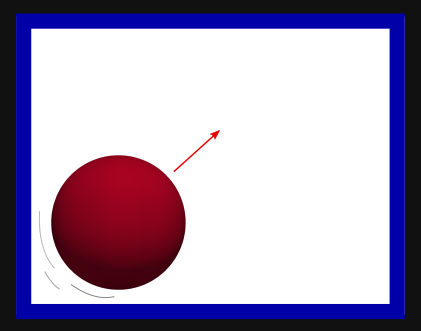
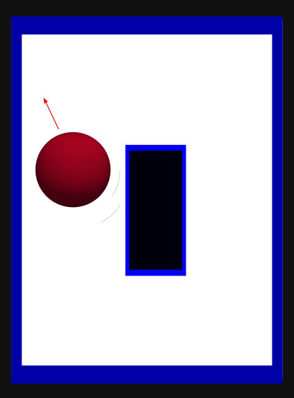
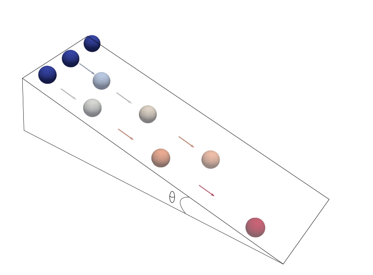

Particle moving with a constant velocity in outer space.
Problem description:
The first tutorial is setup to simulate a particle moving with a constant velocity in the absence of gravity. You can find the simulation setup in Tutorial1_ParticleInOuterSpace.cpp The detailed description of this tutorial is presented below.
Headers:
First, include all headers that are necessary to setup the simulations. They come from the MercuryDPM kernel and the C++ standard libraries (see Developing a kernel feature). Headers files usually have a .h or .hpp extensions. For example:
Use setupInitialConditions to define your particle and wall positions.
Definition: Tutorial1_ParticleInOuterSpace.cpp:27
In setupInitialConditions, we define the initial state of the system (particle and wall positions). In this case, we only create a single particle. An object of type SphericalParticle is created, and the particle properties (positions, radius and velocities) are set. Then the defined information is sent to the classParticleHandler, using the function classParticleHandler::copyAndAddObject
Note, the species will be defined later. Here we create a particle on radius 0.01 which is initial at position (0.1,0.1,0.1) and has initial velocity (0.1,0.0,0.0) so it is moving in the x-direction.
Main function:
In the main function, the global parameters of the problem are defined. It includes gravity, spatial dimensions (x,y,z), total run time, the type of contact law, etc.
The object 'problem' is an instance of the defined class Tutorial1. Global parameters and species will point to the object 'problem'.
Subsequently, the Species of the problem are defined. It means, the properties (density,stiffness) and the corresponding contact law (for this tutorial, see LinearViscoelasticSpecies). Initially, when a particle is created, it attains the properties of a default species type with ‘0’ as its index.
Here, 'species' is an object of the class: LinearViscoelasticSpecies. Data members are fitted to point to this object, and then, copied and added to their corresponding handler classSpeciesHandler.
Outputs:
Data output is vital to analyse simulations, which leads to defining ways to save the simulation data for post processing.
The simulations generate several types of data files.
// number of time steps skipped between saves (i.e. every 10-th time step is written to file)
To run this problem go to the corresponding folder (like: MercuryDPM/MercuryBuild/Drivers/Tutorials) and start
./Tutorial1_ParticleInOuterSpace
The program runs until tmax is reached. Now all data is generated like Tutorial1.data, .restart and .xballs
If you turned on XBalls support in cmake, you can visualize the information in the .data file using
Change the code so that the particle is moving diagonally in x,y and z.
T2: Particle motion on earth

Particle falling due to gravity.
Problem description:
In Tutorial2_ParticleUnderGravity.cpp, we simulate a particle when dropped under the influence of gravity. Basically, this tutorial is an extension of Tutorial1_ParticleInOuterSpace.cpp with few minor changes.
All we need to do is to change the initial particle position and velocity in the inherited class Tutorial2.
Change the direction of gravity to point in the positive y-direction.
T3: Bouncing ball (elastic)

Particle bouncing off the blue wall.
Problem description:
The Tutorial3_BouncingBallElastic.cpp simulates a particle bouncing off a wall. It is assumed the collision between the particle and the wall is elastic by implying that the restitution coefficient is unity. It means that the particle velocity before and after collision remains the same. Additionally, we will learn how to add a wall over which the ball bounces.
Use setupInitialConditions to define your particle and wall positions.
Definition: Tutorial3_BouncingBallElastic.cpp:30
Where the object "w0" is an instance of the class InfiniteWall. Then, the function "copyAndAddObject" copy and add the object to its corresponding handler. The above set of statements, create and place the wall at \( Z_{min} \). Note: Don’t forget to include the InfiniteWall.h header, as shown in the header section. In some sense, creation and addition of a wall is similar to creation and addition of a particle.
Exercises:
Run Tutorial3 and visualise the outcome in ParaView.
Visualise the gravitational ($mgh$) and kinetic energy ( \(\frac12mv^2\)) of the particle over time using gnuplot.
void set(Container &c, Position position, const Value &value)
Definition: stdlist_overload.cpp:36
What collision time/restitution coefficient do you expect/observe?
Increase contact time by a factor 100 and rerun the simulation. What do you observe?
Set restitution to \(0.5\) and rerun the simulation. What do you observe? This idea is expanded in the next exercise
T4: Bouncing ball with dissipation (inelastic)

Particle bouncing off the blue wall with restitution coefficient.
Problem description:
In Tutorial4_BouncingBallInelastic.cpp, the difference between an elastic and inelastic collision between a particle and a wall is illustrated. The only difference between Tutorial3_BouncingBallElastic.cpp and Tutorial4_BouncingBallInelastic.cpp is the value of the restitution coefficient:
In the .cpp file change 'problem.eneFile.setFileType' from NO_FILE to ONE_FILE to create the .ene file, recompile using make and start the code again. Now we can show the energy graph in gnuplot using
gnuplot> set ylabel "Particle's centre of mass in z-direction (m)"
gnuplot> plot'Tutorial4.ene'using 1:8 with linespoints
Change the coefficient of restitution rc to 1.0 and replot the energy.
Now try 0.2.
Now try 0.0.
Now add the commands to create the vtu files so you can visualise in ParaView.
T5: Elastic collision (2 particles)

Particles moving towards each other.
Problem description:
So far, in the above tutorials, we have seen how a particle and a wall interact during a collision. In this tutorial, we illustrate how two particles interact using Tutorial5_ElasticCollision.cpp. For this purpose, we need two particles. The particles may or may not be of the same species type. But, here we shall assume they are of same species and same size.
This function allows to set the initial conditions for our problem to be solved, by default particle ...
Definition: Tutorial5_ElasticCollision.cpp:25
On comparison between the above class and class Tutorial1, we see how an additional particle is added. Two particles are created, and positioned oppositely apart at a certain distance between them. Both the particles, have a certain velocity directing them towards each other.
Exercises:
Add the lines to create the particle and wall vtu files so you can plot in ParaView.
Change the size of the 1st ball from 0.05 m to 0.07 m and re-plot to see the difference.
T6: Elastic collisions with periodic boundaries

(a) Illustrates the idea behind periodic boundaries, particle exiting boundary b2 re-enters through boundary b1 (b) Illustrates the problem setup.
Where "b0" is an instance of the class PeriodicBoundary. Then, the object is copied and added to its corresponding handler: classBoundaryHandler.
Exercise
Add a second periodic wall in the y-direction.
Change the initial velocity of wall of the particles so that it goes through both periodic walls.
Advanced: How do you think the two-periodic walls interact in the corner?
T7: Motion of a particle in a two dimensional (2D) box

Particle motion in a box (blue and black denote the walls).
Problem description:
In previous tutorials, we have seen how a particle interacts with a wall and itself. In this tutorial, we will design boxes of different shapes by using more than one wall. As an example, in absence of gravity, we will simulate a particle moving in a two dimensional square shaped box. We consider two dimensions only for the sake of simplicity. The same idea was introduced in Tutorial3_BouncingBallElastic.cpp.
This function allows to set the initial conditions for our problem to be solved, by default particle ...
Definition: Tutorial7_ParticleIn2DBox.cpp:26
In this class, we setup a 2D square shaped box or a polygon by adding more walls as shown above. In total, we have 4 walls forming our box within which the particle will traverse. Note: As we simulate in 2D, no walls are set in z-direction.
Main function:
As our simulation is two dimensional, we set the system dimensions as 2
Change the angle of left (x-wall) so it tilts at 45 degrees.
Add a 5th wall and change the positions of each such that you are simulating particles in a pentagon.
T8: Motion of a particle in a box with an obstacle

Problem description:
We extend the problem setup of Tutorial 7, by adding a rectangular block as shown in the above figure. To create this block of wall or obstacle, we will use the Class IntersectionOfWalls. Before we go ahead it is advised to know the difference between an infinite wall and finite wall, see Different types of walls. As an example, we create an obstacle using a set of finite walls and place it within the box created using a set of infinite walls. See the above figure.
where "w1" is an instance of the class IntersectionOfWalls. This surface (wall) will have the properties of the index 0: "getObject(0)". Then, the object is copied and added to its corresponding handler: wallHandler.
Exercise
Change the inner shape to a triangle.
Change the outer wall to a doubly periodic box.
T9: Motion of a ball over an inclined plane (Sliding + Rolling)

Problem description:
the motion of three particles over an inclined plane is presented in Tutorial9_InclinedPlane.cpp. Here, the particles are fitted with different features.
This function allows to set the initial conditions for our problem to be solved, by default particle ...
Definition: Tutorial9_InclinedPlane.cpp:26
Three particles are fitted with radius, initial positions and initial velocities.Then, all particles are copied and added to their corresponding handler.
It is defined the object 'w0' as an instance of the class InfiniteWall. For this tutorial, the surface will have the same properties of "object0". It means the surface and the first particle will have the same elastic properties.
Main function:
This simulation contains particles and walls made from three different species (particle-0 and the wall belongs to species-0, particle-1 belongs to species-1, particle-2 belongs to species-2) Hence, three species, and the interactions between the three species, need to be defined.
The main function of Tutorial10_LoadingDataRestart.cpp presents how to create a restart and a data file, then reads these files and subsequently solves it. Mostly however you don't create these files as you restart from a previous session.
T11: Axisymmetric walls inside a cylindrical domain
Problem description:
This tutorial explains how to include axisymmetric walls inside a cylindrical domain. Also, the user will find an useful implementation of how to create polydisperse particle size distribution and perform internal validation tests. The full code can be found in Tutorial11_AxisymmetricWalls.cpp
Headers:
To work with axisymmetric walls, the user needs to add the following headers:
First, it is added the cylinder, then the prism shape or cone that represents the outer part. A flat surface is included in the middle to stop the downforward flow until a specific time. After adding the walls, the species of the particles are included. All particles have the same properties and they are randomly distributed.
An additional member function is included.
//Initially, a wall is inserted in the neck of the hourglass to prevent particles flowing through.
//This wall is moved to form the base of the hourglass at time 0.9
void actionsAfterTimeStep() override {
if (getTime() < 0.9 && getTime() + getTimeStep() > 0.9)
note: to produce the pictures as shown you can use Paraview.
T12: Creating objects by using Prisms
Problem description:
This tutorial explains how to define objects in space with the Prism function. Also, the user will find that you can prescribe the location and motion of the object. The full code can be found in Tutorial12_PrismWalls.cpp
Headers:
To work with prismatic walls in this tutorial, the user needs to add the following headers:
To create the prism we have to do the following: First one creates an instance of IntersectionOfWalls "w1". Next the species are assigned. This line is followed by defining a 3D vector "Points" with space for four vertices. After that the location of the four vertices are defined. Then, by using w1.createPrism(Points) the prism is formed centered at the origin.
Now the object has been formed you can prescribe several properties of the object such as the angular velocity or translational velocity (using setVelocity). Notice that when using setAngularVelocity the object rotates around the origin, so if an object is located at the origin it will rotate around its own axis while located elsewhere it will rotate around the origin. It is essential that you set velocities and positions in the correct order such that you get the desired motion.